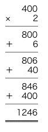

| ノンシャラン道中記 02 合乗り乳母車 ――仏蘭西縦断の巻―― | |
| 久生 十蘭 | |
| (2012) | |
ノンシャラン道中記
合乗り乳母車 ――仏蘭西縦断の巻――
久生十蘭
一、タヌはコン吉に雀の説教。一九二九年師走
の三日、ここも北国の慣いとて、はや暮れかかる午後四時ごろ、巴里
市第十一区三人姉妹
街三番地なる棟割長屋
。その六階の露台に敷布団
を敷き、半裸体に引きむかれた狐面
瘦軀
の東洋人コン吉が、隆々たる筋肉を西北の寒風に吹かせ、前後不覚にわなわなと震えながら、伊太利
乾物屋の店先の棒鱈のように寝そべっているのは、当時欧羅巴
を風靡
している裸体主義
の流行に迎合しているのではない。彼が好むと好まぬにかかわらず、脳神経に栄養を与えるため、一日一時間の日光浴を強制されているのにほかならない。
さるにてもはるか下界の往来では、三々五々と家路に急ぐ小学生の木底の靴音、さては、「第三版
・硬党新報
、夕刊巴里
」と触れ歩く夕刊売りの声も寒く遽
ただしく、かてて加えて真北に変った強風は、今や大束な霙
さえ交えてにわかに吹きつのる様子。日ごろ鈍感なるコン吉も事態ここに至っては猛然憤起、無情にも眼の前に固く閉ざされた玻璃
扉をたたいて、
「もういいかア！」と、必死の悲鳴。すると戸内
から、
「まだよ」と、沈着極まる返答と共に立ち現われたのは、年のころ十八九歳、人間というよりはやや狸に似た愛らしき眼付きの東洋的令嬢。灰色の薄琥珀
の室内服を寛
かに着こなし、いささか熟し過ぎたる橙
のごとき頰の色をしているのは、室内の温気
に上気したためであろうと見受けられた。
「あと何秒ですか？」
「あとまだ二十分よ！ 男のくせにそんなみっともない声を出すのはよしたまえ。ほら、君の鼻の頭なんか、さっきよりずっと血色がよくなったよ」
「もう太陽が沈みました。それに雪が降って来ました」
「雪がなんですか！ あの元気な雀にすこし見習いたまえ」
「すみませんでした。でもネ、雀はあんな毛布
を着ているが、僕はこの通り半裸体なもんですから......」
「じゃ、毛布をあげますから、もう十五分辛棒
していたまえ、いいわね」と、いい捨てたまま、扉
は閉ざされて、如原
。
二、花鉢とおでこの喰合せは一命に関わる。さて、「美しき島」事件で身心耗弱したコン吉が、懐かしい巴里の古巣に帰り着いたのちも、相も変らず、食糧の買い出しから風呂場の修繕、衣裳の塵払い、合唱のお相伴、玄関番
との口論の調停、物もらいとの応待、蓄音器のゼンマイ巻き、小鳥に対する餌
の配給、通信事務の遂行、と、丁稚
輩下のごとく追い使われ、相勤めまする一日十余時間、休みもくれぬ苛酷
い賦役。タヌにあっては煮られたマカロニのごとく尻腰のないコン吉も、実は、心中無念でたまらない。するとここに十一月中旬の吉日
、かねて辱知の仕立屋のお針
嬢、美術研究所の標本
嬢、官文書保存所
の羊皮紙
氏、天文台区第二十七小区受持の警官棍棒
氏を、わが共同の邸宅に招き一夕
盛大なる晩餐会を催すにつき、食堂、玄関、便所の嫌いなく満堂国花をもって埋むべし、という、例によって例のごとき、端倪
すべからざるタヌが咄嗟
の思い立ち。仰せ承ったコン吉がクウル・ド・ラ・レエヌの花市を駆けずり廻って買い集めた三十六個の菊花の大鉢、――これを一個宛
地階から六階まで担
ぎ上げているうち、その二十八個目を三階の階段の七段目まで持ち上げたところで不覚にも眼を廻し、すなわち花もろとも、墜落。己
が身は巨大なる千本咲きの、花鉢の下敷きになって気絶して以来、いささか取りとめなき状態となり、にわかに尊大に構え、放歌高唱し、好んでタヌが愛蔵秘珍する物件を破壊するとか、そのうえ、あるまい事か、この四年以来欧州くんだりを遊歴し、つぶさに苦楽をともにした畏敬する相棒
、美しきタヌ嬢に対して、
「やい、この駱駝の雌め
！」の称をもって呼んだというのである。「さあ、鮫の緬
を持って来い、シトロンを持って来い！」
「いやよ」
「いやよ、とは寛怠至極。しからばこうだ」
「待った、待った！ その人形を投げるんじゃないよ。そっとあたしに渡してちょうだい」
「なんの事はない。ほれ、ポイとこの通り」
「うわア、なさけない事になっちゃった」
「吾輩の命令に服従しないと何をするかわからないよ」
「はい、はい。では、どのくらい？」
「ケチな事をいうな、沢山持って来い。それから、湯タンポがぬるくなったから取り換えるがよかろう。ついでに僕の股引
をば洗濯しておくがよろしい」
「癪
だわア。覚えていらっしゃい」
「なんですか？」
「いいえ、いますぐ」
三、美人知恵深く惑障至って少なきこと。おお！ 日ごろ温和にして猫のごとく従順な君コン吉が、こんなふうにむやみに乱暴を働くというのは、多分、かねて神経衰弱の徴候をはらんでいた君の頭の鉢が、「変り咲き」の国花の花鉢に接触したとたん、交流した精神錯乱の過剰電気が、君の大脳の電極でスパークしたのに違いないよ。だから、まず手始めにその方の療治を始めなくてはならないわね。神経衰弱というのは日光と熱と塩分と燐、それに肉体と声帯の不足から来ているのだから、その方の不足を補えばいいわけよ。塩分は食塩の中に沢山あるけれど、燐は、――ちょっと思いついた事があるわ。ほら、腐りかけた、烏賊
を台所の暗闇に置いてごらんなさい。烏賊と燐の関係は一目瞭然よ。して見ればわけのない事だわね。コン吉よ、どうかしっかりしてね。あなたを並等
な状態にかえすためには少しつらいかもしれないけど、こんなふうな即物的な療法が必要だと思うのよ。まず、
午前 七・三〇 起床。
同 八・〇〇 窒素療法。（最も効果ある深呼吸法）
同 九・〇〇 食塩水五〇〇瓦 。
同 一〇・一〇 ベンネット式跳躍体操。
同 一一・〇〇 発声療法。（大きな声を出す療法）
同 一一・三〇 カルシウム・ビスケット一個。赤酒五瓦 。
午後 一・〇〇 コントラ・バスの演奏。
同 二・〇〇 食塩水五〇〇瓦 。生の玉葱 三個。
同 三・〇〇――四・〇〇 日光浴。
同 五・〇〇 熱気療法。（腹と背中へ焼鏝 をおっつける療法）
同 六・〇〇 食塩水五〇〇瓦 。生烏賊一匹。
同 六・三〇 遊戯。
同 七・〇〇 就寝。
ざっとこんな工合にやるつもりなの。じゃ、いいわね。明日
から始めてよ。
四、鰈
に附ける薬あれば、猫にも財布の必要あり。タヌの新案にかかる、「脳神経の栄養を主としたる即物的な家庭療法」が、どれほど偉大な効果を有するものであるか、その第一日目の夜半においてコン吉は三十九度の熱を出し、脈搏結帯、上厠頻数
、さてそのあげく、毛細管支炎喘息
腐敗食による大腸加太児
という、不思議な余病を併発したのによっても明白だというものである。これにはタヌも色を失い改めて医者よ！ 薬よ！ と、右往左往した末、どうやら一命は取りとめたが、余後はなはだ香
ばしいというわけにはゆかず、今年の冬はぜひとも巴里の冷たい霧から逃れ、南仏蘭西の海岸に日光と塩分を求めて転地しなければならぬという、医師の勧告に従うのやむなきに立ち到った。
しかるべき手廻りの品も鞄に納り、行先きは岩赤く海碧きサン・ラファイエルの岬か、ミモザと夾竹桃
の咲くヴィル・フランシュの海岸と定め、早朝から里昂停車場
へ座席の予約に行ったタヌは、さてその夕方になってから、はるか谷底の舗道の上で、
「コン吉よ、コン吉よ」と、けたたましく呼ぶのである。素破
また事件の到来、凶事の発端、と、よろめく足を踏みしめながら、鉄鎧戸
を開いて露台から霧の街道を見おろすと、タヌは何やら黒い物体の上に跨
って、はなはだ快適な嬌声をあげているので。
「コン吉よウ！ これなんだかあててごらんなさアい！」
「芥箱
の上なんかで遊んでいないで早く上がって来うい」
「なにいってんのよウ。これは自動車だぞオ！」
「誰れのだあ？」
「買ったのよウ！」
「金はどうしたア？」
「君の為替で買ったんだア」
そこでコン吉は、まだ充分健康を回復していないせいもあり、かたがた突然の偉大な衝撃にあってにわかに立場を失い、堂とばかりに床の上に尻餅
をついた。
五、寝起きはとかく不機嫌な巴里の冬空。相も変らず霧のような氷雨
は大気を濡らし、共同便所の瓦斯
灯の舌もまだ蒼白く瞬いている朝の七時ごろ。近くの貨物停車場
の構内から出て来た牛乳会社の大馬車が、角石畳みの舗道の上を轟落轟落
とすさまじい音を立てて駆け過ぎたあとは、往来は急にひっそり閑。聴えるものは遠くの袋小路
で触れる「古服
や屑のお払い
」声ばかり。
全身を毛布で包み、高からぬ鼻の先だけをつん出したコン吉が、その、夢のような金文字入りの自動車を一見するため、タヌに引っ立てられて歩道
まで降りて来たが、その場には一向自動車らしいものもない。そこで、コン吉が、まだ夢の中なる寝ぼけ声で、
「自動車というのは一体どこにあるのかね？ なにしろ、こう寒くてはかなわないから、見せるなら見せるで、早いとこやってもらいたい。さあ、その車庫
というのへ行こうではないか。僕はこうして腹んとこに湯タンポを支えてるので滑り落ちそうで仕様がない」というと、タヌは派手な男襟巻
を巻き付けた顎
で、右手の箱のようなものをしゃくって見せ、
「ここにあるよ。しっかり眼を覚まさなくては駄目ね」と答えたのである。
さればコン吉は、その薄鉄板
製の茶箱の前後に、生来キョトキョトと落着かぬ視線を走らせて眺めるところ、これは十年ぐらい前には確かに自動車であったに違いない、そういう痕跡は今でもところどころにほのかに残っているのである。――さながら物に脅えた病み猫のごとく背中を丸め、中腰になって構えているその姿というものは、実にこれ酸鼻
の極み、一九八五年に、初めてブウロオニュの森林公園
を散歩したパアナアルの石油自動車
もかくやと思うばかり。踏段
は朽ち前照灯
は首を折り、満足に泥除けの付いているのは後ろの車一つだけ。そのうえ、車の背中には、唐草模様の枠の中に、次の様な金文字が麗々しく書かれているのである。
鉄骨入婦人胴着
一手販売
アランベエル商会
この華やかな車を一瞥するや否や、あまりの事にコン吉が、
「うわア」と一声、本能的に逃げ出そうとすると、タヌは、優しく後ろから抱
きとめて、
「コン吉、嬉しいでしょう。嬉しいでしょう」と、軽くコン吉の背中を叩
するのであった。
「念を入れるようだが、われわれがニースまで自動車旅行
するというのはこの車のことなのかね」と、コン吉が恐る恐るうかがいを立てるとタヌは、
「そうですとも」と、流し目で愛
しげに自動車を見やりながら、
「とにかく、車に乗りたまえ。そんなところに愚図愚図
しているとまた風邪を引くよ」と、車の方へコン吉を押しやろうとする。
「しかし、あの中へ入っても、一向戸外
の気候と変りはないというわけは、この自動車には幌も雨除けもないのだからね。僕はこういう状態のままでニースまで、一〇八八粁
もゆられて行くのはどうも心もとない気がするんだ。もし、途中で雨または雪などが降ったならば、一体どうすればいいのだろう」
「わかってる。ほら、あの隅んところに大きな蝙蝠傘
を用意しておいたから、あれを拡げると、雨だって風だって防げるわけよ」
「いや、結構です。でもネ、僕はこの通り毛布の下に寝巻
を着ている始末だから、ちょっと上まで行って......」
ともかく、一寸
延しにしてその間にしかるべき応急手段を廻
らそうという魂胆
。タヌは、四分の三身
という仕立か外套に腕を通し運転用手袋
をはきながら、
「いいえ、かまわないよ。楽にしていたまえ」と、今にも出発しようという身構え。コン吉は絶体絶命。
「どうもありがとう。......でもネ、僕なんかにこんな自動車はもったいないです」と、ひたすらに辞退する。
「君、もったいないことなんかあるもんですか。汽車で行くよりずっと安あがりだよ。いいわね、ニースまでの汽車賃は一人片道四百法
でしょう。それに大鞄
の運賃が二百法、赤帽代二十法、座席の予約料
が三法。こいつを往復の計算にすると......」
ここでタヌは、消炭
のかけらを拾って歩道の上へ書きつけた。

「ところで、こいつはたった八百法で買ったんだから、1246－800＝446で、四百四十六法も経済したうえに、あたし達は、碧瑠璃海岸
の春風
を肩で切りながら、夢のように美しいニースの『英国散歩道
』や、竜舌蘭
の咲いたフェラの岬をドリヴェできるというわけなのよ。この自動車はポルト・オルレアンの古自動車市で買ったんだから、立派とか豪華
とかっていうわけにはいかないけれど、なにしろコオト・ダジュウルのことですもの、自動車
の一つくらい持ってなくては、シュナイダアにもコティにも交際
うことは難しいのよ。さあ、コン吉、湯タンポをお腹んところへあてて！ 車ん中であまり暴れると、踏み抜くかもしれないから用心しなくてはだめよ。いいわね、さ、出発！」
六、飛んだり跳ねたりマリオネットの兎小僧。北は巴里を基点として、南は仏伊の国境マントンに至る、ここは仏蘭西の※［＃5
分の4
、26-上-8
］
を縦に貫く坦々たる国有道路
。この大道を、磨き上げられた宝石のごとき Peugeot-〝103〟、海鱸
のごとき Renault の Les Stella、さてはロオルス・ロイス、イスパノスュイザ、――おのがじし軽やかな警笛
と香水の匂いを残して、風のごとく爽
やかに疾駆するうちに、模様入りの考古学的な自動車が、大いなる蝙蝠傘
をさした二人の東洋人を乗せ大工場の移転のごとき壮大な爆音をたて、蒙々たるギャソレンの煙幕を張って、あたかも病みあがりのロイマチス患者のごとき蹌踉
たる歩調
で、大道狭しと漫歩しているのは、まことに荘重類ない眺めであった。進むと見ればたちまち退き、右によろめき左にのめくり、一上
一下
、輾転反側。さればコン吉は、手鍋
の中で炒
られる腸詰のごとく、座席の上で転げ廻りながら、ここを先途
と蝙蝠傘に獅嚙
ついている様子。
雑然たる工場と、ボンボンの箱のような小住宅が雑踏する巴里の郊外地帯
を離れると間もなくブウレエの石切り場にさしかかる。コン吉がこの大震動の間から、そっと偵察の目を押し開けて眺むれば、遠い野面
には霜に濡れた麦の切株、玻璃鐘
の帽子をかぶせたサラドの促成畑、前庭に果樹園を持った変哲もない百姓小屋、いずれも駱駝
色に煤
ぼけ、鳥肌立ったる冬景色。
巴里の市門
イヴリイをよろめき出してから三時間あまり、もうオオゼエル村のあたりまで来たのでもあろうかと、ふと何気
なく巴里の方を振り返ると、ナント、エッフェル塔は三色旗をかかげて、まだほんの間近にそびえ立っているという有様。これにはコン吉も呆
れ果て、
「どうだろう、これからおいおい速力が出るという工合になるのだろうね。昼飯はオオゼエルの野菜料理屋で、名代のオムレットを喰べさせると君はいったが、もうそろそろ正午
だというのに、今見たらエッフェル塔はまだ目のしたにある様子だ。このぶんでは、巴里まで引き返して昼飯にした方が早そうだね。どうだろう」と、舌を嚙
まない様に用心しながら、途切れ途切れにこれだけいうと、タヌは、
「巴里に引き返すといったって、この車は前だけにしか動かないよ。お腹
がすいたら、この籠の中に麵麭
と牛酪
が入ってるから、それでも喰べて我慢していたまえ」と、背中越しに籠を突き出してよこした。
コン吉は一切
を運命とあきらめ、包をあけて麵麭
にバタをぬろうとしていたが、やがて、
「タヌ君、どうだろう。麵麭
にバタをぬる間だけ、ちょっと自動車をとめてもらえないだろうか。なにしろ、バタのナイフが眉間
や喉へ来そうで危なくて仕様がない」
タヌは運転台の鏡の中で眉を顰
めながら、
「パンを一口喰べてから、バタを指で掬
って䑛
めればいいじゃないの。君もずいぶん馬鹿ね。この車は一度停めたら、動き出すまでにはなかなかだから、停めるわけには行かないよ」
「では、バタの方はそれでいいとして、速力の方をもう少し出してもらうわけには行かないだろうか。僕はもうサラドの畑を見るのは飽き飽きした。少し変った景色も見せてもらいたいものだね」
「でも、これより出すと危ないよ」
「いや、そんな事はあるまい。今すれ違った葬式の馬車だって、この車よりは早く走っていたからね。せめて、あの程度にやってもらいたいものだ」
「君さえ承知なら、やって見ましょうか」といいながら、タヌがぐいと緩急機
を変えたと思うと、そのとたんコン吉は、ビックリ箱から跳ね出した三毛猫のように座席から飛びあがり、寝巻のままでサラド畑の中へ投げ出された。
さて、難行苦行のすえ、フォンテエヌブウロオの森をはるか左に見、ロアンの運河
にそったモレという町に到着したのは夜の九時過ぎ。この日の行程わずかに六十四粁
。思い遙かす、ニースまではまだこれから千〇二十四粁
の長道中。この調子では、今年中にゆきつけるものやら、来年の春までかかるものやら、コン吉は胸を抱
いてはなはだ憂鬱。
七、雑魚
の魚交
り、並びに生簀
の悶着のこと。翌日の出発は午前七時。タヌに寝床から引きはがされたコン吉は、何を思ったか上衣
の下に剣術
の胸当て
のごとき、和製の真綿のチョッキを着込み、腹と腰に花模様の華やかな小布団
を巻き付けたのは、多分防寒のためというよりは、街上に投げ出された時の用心のためであるらしかった。パンにはあらかじめバタをぬり、気附
薬のために「ナポレオン三世」という銘のある葡萄酒を六本までも仕込んだのは、はなはだ時宜に適した思い付き。タヌはと見れば、これもまた髪を梳
り、丹念に爪を磨き、キャロン会社製造の「謝肉祭の夜
」という香水をさえ下着に振り撒
いたのは、その昔、東邦の騎士
が兜
に香を焚きしめたという故事もあり、覚悟のほども察しられて、勇ましくもまた涙ぐましき極みであった。
決死の両士を乗せたアランベエル商会の自動車は、遅々
としてヨンヌの平野をのたくりゆくうち、ようやく正午
近く、サンの町の教会の尖塔が、向うの丘の薄陽
の中に浮びあがって見えるところまで辿り着いた。コン吉は今日こそは正当
な昼飯にありつけると、心情いささか駘蕩
たる趣きを呈
しかけて来たところ、アランベエル商会は、その町の入口で、あたかも道路改修中の柔
かいアスファルトの層の中へ前足を突っ込んでしまった。さながら蠅取り紙に足を取られた銀蠅の、藻搔
けば藻搔くほど深みに引き込まるる、退
くも引くも意に任せず、ここに全く進退谷
まった様子。商会の後ろにはこのために往来止めを喰った数十台の高級自動車が、口頭と警笛をもって、「退
け、退け」としきりに催促する。道路工夫はわめく、監督は地団太
を踏む。タヌもようやく焦燥気味
で、あちらを捻
り、こちらを押すが、商会はアリゾナの野における悍馬
のように、ただ後足でぴょんぴょん跳ねくるばかり、一向に埓
があく様子もない。業
を煮やした貴縉
紳士ならびに夫人令嬢は、それぞれ車から降り立って、二人の車を十重
二十重に取り囲み、口々にがやがやと抗議を申し込む。
コン吉はたちまち上気し、鼻の頭に汗をかいてただ埓もなく、
「パルドン、パルドン」の百万陀羅
。これに反してタヌは、群集の口が増せば増すほどいよいよ活況を呈し、四面八方に薙
ぎ立てる。
「君、ちょいとその紳士
。君はいま、あたしの車をtouf-touf
だといったね。ぼろだって芥箱
だって大きなお世話だよ。君の自動車を持って来てごらんなさい。どっちがtouf-touf
だかくらべて見てあげるから。なんだイ、髯なんか生やして。......それから、そっちの夫人
、君はさっき（このやりきれないpouce-pouce
）といったね。そォお、乳母車のように楽に押せるかどうか、ひとつやって見てくれない？......ねえ諸君、動かないのは車のせいじゃないんだよ。アスファルトのせいなんだよ。こんなところへアスファルトなんか敷くからいけないんだ。これでも苦情があるならいってみてくれない。......さ、誰れでもいいから出ておいで！」
すると、声に応じて心得ありげな一人の流行的紳士が、群集の中から進み出て車の前蓋を開け、しきりにそこここと検閲していたが、さすがの彼もこの超科学的な発動機械には手の付けようがないらしく、やがて諦めて引きさがった。
群集一同は、この紳士を中心にして、しばらく額を集めて協議していたが、やがて衆議一決。タヌの気焰
に頓着なく、七八人の手で二人の自動車を、ぬかるみの細い田舎道へ、「一昨日
来い」とばかりに押し出した。タヌは烈火のごとく猛り立って、
「なんだイ、誰れがあんな気障
な道なんか通ってやるものか。ね、コン吉、ニースへ行く道は一本きりじゃないよ。あたしは、もうこの道をどこまでもまっすぐに行くことに決めた」と宣言した。コン吉も急に元気凛々
。
「よろしい。僕も賛成です。あんな道を通る必要はない。あれは俗人主義の道だからね。僕たちはこの平和な田舎道を通って、噴水に挨拶
したり、道端の小豚
に戯
ったりしながら、風雅な旅を続けることにしよう」
こうなっては、来年の夏までかかろうが、冬までかかろうが、かまうことではない。山も谷も恐るるところに非
ず、どこまでもこの道を辿
ってニースまで行き着こう、と、二人で固く誓いを立て、また蹌踉
たる前進を続けるのであった。
八、月に村雲花に風、犬も歩けば弾丸
に当る。さて、ヴァンヌの川を横に突っ切り、ヴィルヌウヴ・Ｓ・Ｙの二等堡塁
を右に見て、道なき道を求めながら行くうちに、人里離れた乾沢地の低い築堤のそばまで来かかった。このあたりは一面の荒涼たる枯葦原。遠くには夕陽に燃えあがるペエ・ドオトの山の斜面、風に戦
くものは枯草と野薔薇の枝、鳴くものは嘴
の赤い鴉
ばかり。
二人は大言壮語したものの、この冬枯れの夕景色を見ているうちに、行く末のことも思われて、なんとなく泣き出したいような心持。克明に前進を続ける気力も失
せて、その土堤
のそばへ車を停め、言葉もなく枯草の上に足を投げ出した。
コン吉がそこで、残り少なになった巻煙草入れから煙草を一本抜き出して、いま火を点
けようとしたとたん、口笛のような鋭い弾道の音をひいて飛んで来た砲弾が、二人のつい鼻っさきの土堤の横っ腹で轟然
と炸裂した。
「うわア！」と、仰天する暇もなく、続いて飛来した第二弾。車の後輪をかすめて、また土堤の側面で壮大な土煙
をあげる。
驚破
、このへんでいよいよ仏独戦争が始まったのに違いない。地球の向う側から、はるばる欧羅巴
くんだりまでやって来て、流れ弾
に当って討ち死にするのはいかにも残念。ともかくまず逃げるに限ると、期せずして二人が手を取り合って、闇雲に駆け出そうとすると、土堤の右手の壕
のようなところから、鉄甲
をかぶった水色羅紗の兵士が一人携帯電話機の受話器だけを持って跳
り出し、大喝一声、
「止れ
！」と、縮みあがるような凄味
のある声でどなりつけた。たちまちセエヴル焼の人形のようにこわばってしまった二人の前へ駆け寄って来た兵士、今度は何を立腹したのか、いきなり、
「馬鹿野郎
！」と我鳴
った。「どこへ行くか
」
「あの、ニースまで行くんですけれど」
「なぜこんな処を通行するか
」
「あら、いけないの」
そこで兵士は、迂散
くさそうにじろじろ見すえてから、
「君達の国籍はどこか
」
「大日本帝国」
「旅行券
！」
コン吉が恐る恐る差し出した旅券の写真と二人の顔をまたじろじろ見くらべてから、
「写真機を持ってるか
」
「ええ、あってよ」と、タヌはそろそろ中腹な声を出し始める。
「この辺で撮影したか
？」
「そんな暇なかったよ」
タヌのこういう語調は、コン吉には心配でたまらない。もし、この兵士を怒らせたら、――元来兵隊さんは恐いものにきまってる。おずおずとそばから割り込んで、ゆがんだような愛想笑いをしながら、
「兵士君、とんでもない話ですよ。われわれは、写真などはまるっきり......」
「一緒に要塞司令部まで来たまえ
！」
「でも......」
「ま、いいから来たまえ
！」
二人の自動車はまた枯野原を通って引き返し、やがて見あげるように高い突角堡
の正面に行き着いた。二人は自動車から引きおろされ、アーチ形の暗い坑道を通り、細長い側防兵舎
の中に連れ込まれそこで写真機を取りあげられて、固い木の床几
のうえで一時間近くも待たされたうえ一段と奥まった部屋へ導かれた。正面の大きな机の向うに、いろいろな平面図や断面図を背にしてすわっているのは、伍長でもあろうか大将でもあろうか、赭顔
白髪の堂々たる風貌の軍人。
ああこれは大変なことになった。このぶんではひょっとしたらスパイの嫌疑を受けて、こっそり殺されてしまうのであろう。そういう話を確かに聞いた事がある。これはいきなり謝
ってしまうに限る、とコン吉は、まだ椅子にもすわらぬうちに、
「大将さま、ごかんべんなすって下さい」と、東洋風にぺこぺこ頭をさげて嘆願した。大将は苦
りきった顔で、
「射程標識の前で寝ころんでいる馬鹿があるか！」と、吐き出すようにいった。「観測兵が発見しなかったら、君達は今ごろどんなになっていたかわからんぞ」
「すみませんでした」と、さすがのタヌも大将にかかっては手も足も出ない様子。
何のためにこんな道を通るか、とか、この先、どこへ行くつもりか、とか、いろいろしちくどく訊問されたうえ、乾板を没収され、懇々
と将来を戒
められて放免されたのは夕方の六時ごろ。その写真機をお下げ渡しになる時、大将は、
「種板には豚の子ばかし写っとったそうだ」と、ひとこと附け加えてくれた。
九、家には白鼠あれば山には背広の紳士あり。サン・フロランタンの町はすぐそこだ、と要塞を出る時聞いたのだが、いつまで行っても山また山。どうやら、名だたるペエ・ドオトの山道に迷い込んでしまった様子。地勢はこのへんから急に昇
って、石に阻
まれたり窪地で途切られたりする、曲りくねった小径
が一筋かすかに続いているばかり。漆のような闇の中から突然浮び出す白骨のような樺の朽木。吹く風も妙に湿って、さながら陰府
からでも吹いて来たよう。このもの凄
い山道を乏しい前照灯
の光りだけで辿
って行く心細さ、恐ろしさ。臆病未練なコン吉は、もう魂も身にそわないような心持。すると、横手の小道から、この寒空に、外套も着ず帽子もかぶらぬ、三十歳ぐらいの奇妙な男が現われて、
「いよウ」と、二人に快活な声をかけた。二人は天の助けと喜んで、サン・フロランタンへ出る道をたずねると、その男は車の扉
に手を掛けて並んで歩きながら、
「なアに、じきでさ」と、事もなげに答えた。
「この道をまっすぐに行けばいいのね」と、タヌがたずねると、
「ええ、まあ、そうでしょう」という返事。
「もう一時間ぐらい？」
「なアに、じきでさ。お嬢さん、お急ぎですか」と、妙な事をいう。
「そうよ。誰れがこんな暗い山の中にいたいもんですか」すると、男はそれを聞き流して、コン吉に、
「ときに、いく時ごろだろう」と、きく。
コン吉が時計を出して、今は八時十分だ、と、おろおろしながら答えると、男はその時計をちらりと見て、
「おや、とんだ良
い時計
だ」と、ニヤリと笑ってから、「お前さん達は、安南人
かね、支那人
かね」
「ジャポネです」
「ジャポネね？ ふうむ」といって、しばらく何か考えていたが、「俺あね、日本人にあいたいあいたいと思っていたんだぜ。......こんな山ン中で日本人にあえようとは思わなかった」あとはひとりごとのように、「とんだいい廻
り合せだ」といった。「そうさ、今から六年ぐらい前の話だ。俺の弟はなあ、ツウロンの酒場
で日本人の水兵
に短剣
で眠らされたんだ。弟はそのころ威勢のいい古服屋
だったんだが、その晩酒場
で女
を連れて一杯やッていたっていうんだ。するその水兵
が来やがって、どうしてもその女
と踊
するというんだ。弟の野郎が腹を立てて、そいつの横っ面を平手打
したところが、いきなり引っこ抜いて弟の頭
へ突っ通したんだ。弟は血だまりん中へ突っぷしてしまう、亭主
が驚いて戸外
へ飛び出して巡査
を呼んでる暇に、その畜生
が辻馬車
に乗ってどっかへ行ってしまったというんだ。......それっきりさ。どうにも仕様がありゃしない。......だから俺あ、一度日本人
にあってよくお礼をいいてえと思っていたのさ」といってから、いかにも満足でたまらない、といったふうに、ヒュウ！ と短く鋭い口笛を吹いた。タヌは少し蒼い顔をしながら、
「そイで、君何をしようっていうの？ 妙なことをすると喇叭
を鳴らして人を呼んでよ」
すると男は妙な苦笑をしながら、
「自動車の喇叭
を聞いて飛び出して来るのは旅館
の召使
だけさ」といっておいて、急にコン吉の方に向き直り、
「おい、若いの。先刻
からいやに黙ってるじゃねえか。......乙に澄ますねえ
、やい！」と、いきなり扉
越しにコン吉の脇腹を小突
いた。コン吉は螽斯
のように飛びあがって、
「お助け下さい」と、手を合せた。
男は、ニヤニヤ笑ってコン吉を見ていたが、やがてQuand nous étions deux
という小唄を口笛で吹きながら、横の小道の方へ入って行ってしまった。
どこを、どう辿
ったのかまるで夢中でサン・フロランタンの「旅館・金の鶏
」というのにころげこんだのは九時近く。二人は九死一生の思い。――食卓をへだてて顔を見合せながら、たがいの無事を祝っていると、さっきの男が鬱金
色の前掛け
を胸から掛けて、スウプの鉢を持ち出して来た。コン吉は、
「や、また来た！」といって立ちあがろうとすると、男は卓
の上へ鉢を置きながら、
「日本人
ってのは野蛮で勇気がある、ってことを聴いていたが、あなたの臆病なのには驚いた。もっともあなたの様なひとばかしじゃないんでしょうが......」といって笑った。
一〇、失せ物は巽
の方の栗
の根元を探すべし。デイジョンを過ぎ、ボウム駅の手前の、ニュイ・サン・ジャンという町へ着いたのはそれから三日の後
のこと。するとその晩、この愛すべき自動車は中へ突っ込んでおいた「ナポレオン三世」の瓶や上靴ももろ共に何者かに窃取された。こんなものは誰れも持って行くまいと安心して、市場の前の庭へ投げ出して置いたのが悪かったのだ。芥箱
であれ touf-touf であれ、あれはわれわれの財産だ。とりあえずその町の分署へ行って、机の前で泰然と腕組みしている署長に訴えた。
「署長さん、実は昨夜
、われわれの車
が盗まれました」
「ほほう、どんな車
だね？」
「二人乗るくらいの、ほんのちょっとしたやつなんですけど」
「番号は何番じゃったね」
「あの車に番号なんかあったかしら？」
署長は大きな帳面を引き出して、親指の腹を䑛
めあげ䑛めあげ頁
を繰
っていたが、
「盗まれたのは何日
だといったかね？」
「昨夜
なんですの」
「昨夜
？ いや、そんな事はあるまい。もう六ヵ月にもなっている。あんた達の車というのは、拾得物としてちゃんと届け出てありますぞ。ご安心なさるがいい。今、引き渡しますから、ここで待っていなさい、いいか」といって戸外
へ出て行ったが、やがて、曲馬団ででも使ったと思われる「二人乗りの自転車
」を押し出して来た。
「どうじゃネ？」
「なんですか？」
「あんた達の盗まれた車
というのはこれじゃろうね。二人乗りの無番号。こんなものをむやみに落しては困るねえ。ささ持ってゆきなさい。帳面のここんところへ署名
して......」
この町の旅館に二日の間滞在して、泰然たる署長がもたらすであろう吉報を待っていたが、自動車も「ナポレオン三世」もとうとう現われて来なかった。あの自動車は、見かけは滑稽
なやつだけど、乗ってるうちにいろいろな美点も発見した。今では執着も残るし、名残
もなかなか深いが、なくなったものは今さらどうにも仕様がない。あの自動車のまぎれない特徴は、仏国警察の頑丈な盗難台帳に記帳しておいたから、もし縁があれば、また廻
り合うこともあるであろう。
二人はその夕方、ボウム駅からＰ・Ｌ・Ｍ急行
で、常春
の碧瑠璃海岸
へ向けて出発した。
底本：「久生十蘭全集 Ⅵ」三一書房
１９７０（昭和45
）年4
月30
日第1
版第1
刷発行
１９７４（昭和49
）年6
月30
日第1
版第2
刷発行
初出：「新青年」
１９３４（昭和9
）年2
月号
入力：tatsuki
校正：伊藤時也
２００９年10
月26
日作成
青空文庫作成ファイル：
このファイルは、インターネットの図書館、青空文庫（http://www.aozora.gr.jp/）で作られました。入力、校正、制作にあたったのは、ボランティアの皆さんです。